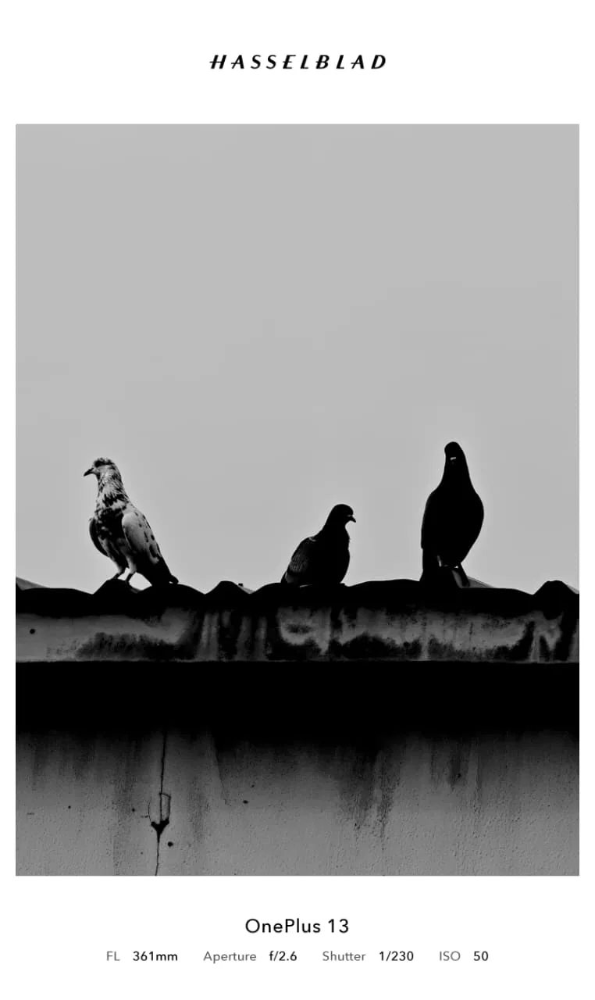

[ 01 / 04 ]

Quiet stillness etched against a pale sky. Three silhouettes perched along the rooftop perimeter.
Project Manager by day • Photographer on weekends. Capturing learning, growth, and stillness through the years.
"An enthusiast behind the lens, a project manager by day, and a photographer on weekends."
ashish_k.t is a personal visual journal documenting the continuous learning, evolving perspective, and personal growth discovered through the years.
Balancing the structured discipline and analytical focus of project management with the spontaneous, unhurried pursuit of natural light, every frame is an intentional attempt to slow down, observe, and preserve genuine moments in an otherwise hurried world.
Whether capturing quiet rooftop silhouettes in monochrome, cultural rhythms enveloped in temple incense, or raw monsoon thunderstorms tearing through night skies, each photograph reflects an ongoing exploration of geometry, human devotion, and fleeting light.
Available for visual collaborations, assignments, and print requests. Connect directly via email or follow recent photographs on Instagram.